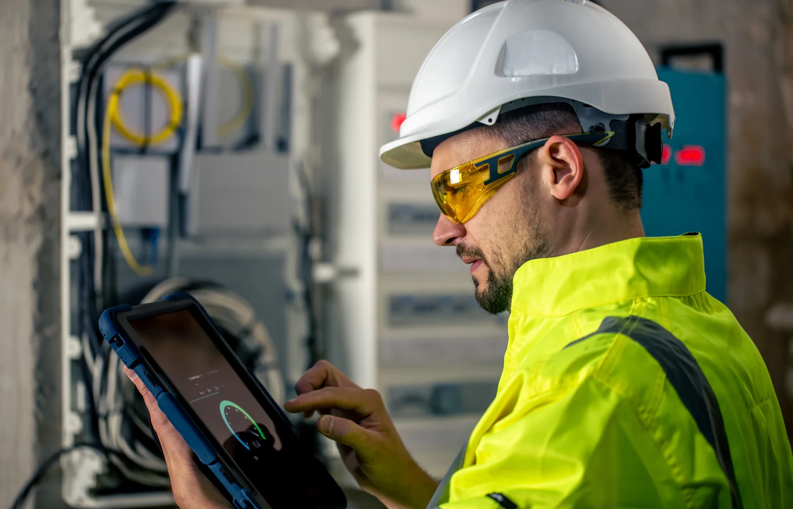
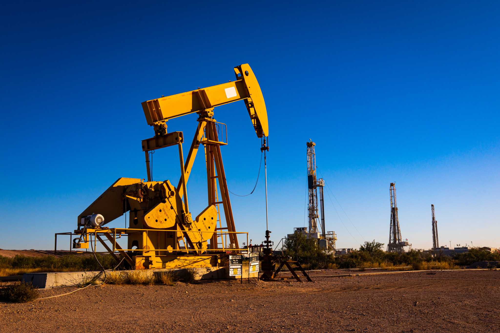

Tectonic Energy
Who we are
We make, import, blend and deliver fuels, lubricants, solvents and bitumen through our extensive national and international supply chains. The South African economy relies on the products we supply, our experience in operating supply chains safely and reliably, and our commitment to helping South African motorists, businesses and industries. We’re proudly South African, extremely proud of our history and excited to be an important part of South Africa’s future
Where we are?
We are the exclusive South African licensee of one of the world’s most recognisable brands, selling high quality Shell fuels and lubricants to motorists across the country. For industry, we provide the fuels, lubricants and support that our customers in the transport, mining, aviation, marine, manufacturing, defence and construction sectors need to keep their businesses moving. We invest in our infrastructure and continue to develop our national network of around 1,350 Shell and Liberty service stations so that our products and services are never too far away.
The Tectonic Energy way
Our people drive our success and that of our customers, so we’re proud to have built a culture that reflects their passion, offers flexibility in how they work, and provides career pathways to help them grow and thrive. We partner with local community organisations and work respectfully with Indigenous peoples to help us build a diverse and enriched business and a stronger and more vibrant South Africa. We are committed to operating safely and protecting the environment and the communities where we operate.
Shaping our future
As a manufacturer and supplier of products derived from hydrocarbons, we recognise that we have an important role to play in supporting the transition to a lower carbon future. We’re determined to lighten our environmental footprint by investing in global best practice and innovative sustainability solutions across our operations. Australia depends on Viva Energy. We will continue to help people reach their destination and look forward to building a safe and reliable energy future.
Vision statement
To become South Africa’s leading energy business, supporting national energy security and transitioning to a lower-carbon future, while its mission is to help South Africa’s reach their destinations by refining, importing, and delivering the fuels and energy they need. A key part of their vision is to develop and support sustainable energy solutions, such as electric vehicle (EV) recharging stations and hydrogen refuelling facilities.
Mission statement
This is achieved by refining, importing, and delivering the energy products (fuels, oils, bitumen, solvents) that power Australian industries and daily life. The company is committed to creating and supplying lower-emission fuels and developing infrastructure for cleaner energy. Viva Energy aims to grow its position in the growing convenience market and reduce reliance on traditional fuel earnings over time.